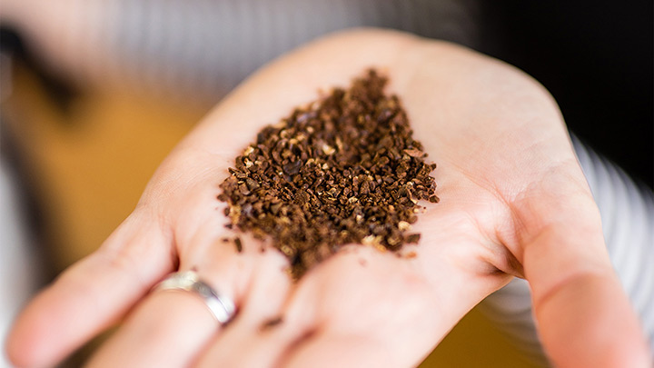
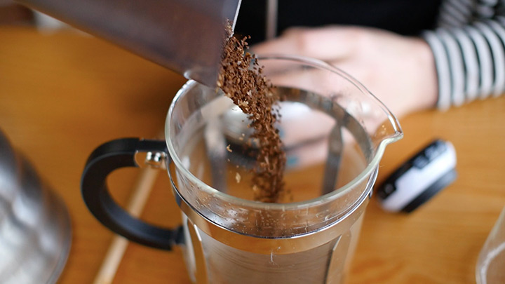
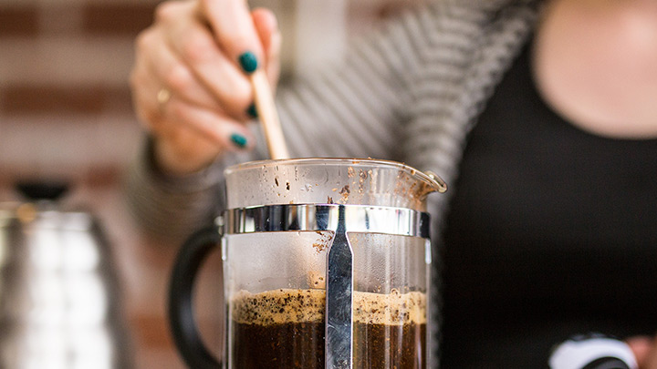
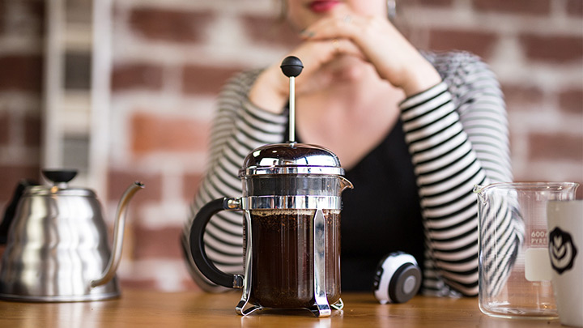
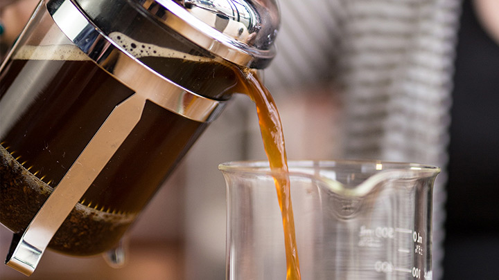

How To Brew French Press Coffee
French pressed coffee is an easy, cheap, and efficient way to make coffee. If you want a smooth, buttery cup of coffee, stay away from the Americanized coffeemaker and opt for the more manual French Press. It requires a bit more work but your taste buds will thank you!
What you'll need
- French Press
- Coffee Beans
- Boiled Water
- Spoon
Steps
-
Grind Coffee
Grind the coffee beans to your liking. The finer the grounds, the stronger the taste.
 -
Add Coffee
Add your coffee grounds to the french press.
 -
Add Water and Stir
Pour in about half of the boiled water and stir. Then pour the rest of the water in and place the plunger on top.
 -
Wait
Wait 3-5 minutes.
 -
Press, Pour, and Enjoy
Press down the plunger, pour your coffee, and enjoy your french pressed coffee!

All Done!
Now you know how to make a tasty pot of french pressed coffee.